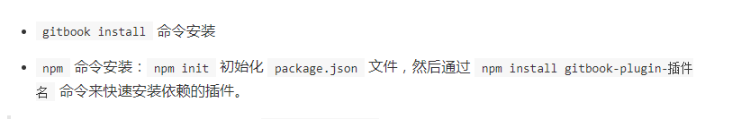
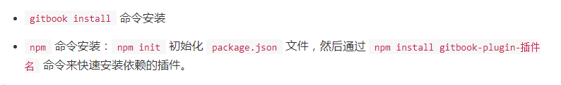

问题
1. 启动后编辑热加载失败问题
gitbook 在Windows系统无法热加载，总是报错！
{kind=link}
通过 gitbook serve --log=debug 命令可以打印MarkDown转为HTML过程中的日志
$ gitbook serve --log=debug
Live reload server started on port: 35729
Press CTRL+C to quit ...
debug: readme found at README.md
debug: summary file found at SUMMARY.md
debug: cleanup folder "F:\IT工具\gitBook\_book"
info: 7 plugins are installed
info: loading plugin "livereload"... OK
info: loading plugin "highlight"... OK
info: loading plugin "search"... OK
info: loading plugin "lunr"... OK
info: loading plugin "sharing"... OK
info: loading plugin "fontsettings"... OK
info: loading plugin "theme-default"... OK
info: found 9 pages
info: found 31 asset files
debug: calling hook "config"
debug: calling hook "init"
debug: copy assets from theme C:\Users\Administrator\.gitbook\versions\3.2.3\nod
e_modules\gitbook-plugin-theme-default\_assets\website
debug: copy resources from plugin C:\Users\Administrator\.gitbook\versions\3.2.3
\node_modules\gitbook-plugin-fontsettings\assets
debug: copy resources from plugin C:\Users\Administrator\.gitbook\versions\3.2.3
\node_modules\gitbook-plugin-sharing\assets
debug: copy resources from plugin C:\Users\Administrator\.gitbook\versions\3.2.3
\node_modules\gitbook-plugin-lunr\assets
debug: copy resources from plugin C:\Users\Administrator\.gitbook\versions\3.2.3
\node_modules\gitbook-plugin-search\assets
debug: copy resources from plugin C:\Users\Administrator\.gitbook\versions\3.2.3
\node_modules\gitbook-plugin-highlight\css
debug: copy resources from plugin C:\Users\Administrator\.gitbook\versions\3.2.3
\node_modules\gitbook-plugin-livereload\book
debug: copy asset ".gitignore"
debug: copy asset "basicUse\basicUse.md"
debug: copy asset "imgs\ghPagesDeployments.png"
debug: copy asset "imgs\gitBookComSpaces.png"
debug: copy asset "imgs\gitBookPreview.png"
debug: copy asset "imgs\gitCreateRepo.png"
debug: copy asset "imgs\gitEnvironments.png"
debug: copy asset "imgs\gitPagesPreview.png"
debug: copy asset "imgs\gitbookCommand.png"
debug: copy asset "imgs\gitbookFetch_1.png"
debug: copy asset "imgs\gitbookFetch_2.png"
debug: copy asset "imgs\gitbookHotReplaceFailure.png"
debug: copy asset "imgs\gitbookInit.png"
debug: copy asset "imgs\gitbookServe.png"
debug: copy asset "imgs\githubPagesSettings.png"
debug: copy asset "imgs\githubProjectRepo.png"
debug: copy asset "imgs\linkGitHubRepo.png"
debug: copy asset "imgs\linkGitHubRepoFirstSync.png"
debug: copy asset "imgs\linkGitHubRepoSelect.png"
debug: copy asset "imgs\linkGitHubRepoSelectBranch.png"
debug: copy asset "imgs\linkedGitHubRepo.png"
debug: copy asset "imgs\linkingGitHubRepo.png"
debug: copy asset "imgs\npmGitbookCli.png"
debug: copy asset "imgs\shareLink.png"
debug: copy asset "installation\installation.md"
debug: copy asset "manageRelease\README.md"
debug: copy asset "manageRelease\gitbookAssociateGithub.md"
debug: copy asset "manageRelease\githubManageBook.md"
debug: copy asset "manageRelease\publishToGithubPages.md"
debug: copy asset "problem\README.md"
debug: copy asset "reference\reference.md"
debug: generate page "README.md"
debug: calling hook "page:before"
debug: calling hook "page"
debug: index page README.md
debug: generate page "installation/installation.md"
debug: calling hook "page:before"
debug: calling hook "page"
debug: index page installation/installation.md
debug: generate page "basicUse/basicUse.md"
debug: calling hook "page:before"
debug: calling hook "page"
debug: index page basicUse/basicUse.md
debug: generate page "manageRelease/README.md"
debug: calling hook "page:before"
debug: calling hook "page"
debug: index page manageRelease/README.md
debug: generate page "manageRelease/githubManageBook.md"
debug: calling hook "page:before"
debug: calling hook "page"
debug: index page manageRelease/githubManageBook.md
debug: generate page "manageRelease/gitbookAssociateGithub.md"
debug: calling hook "page:before"
debug: calling hook "page"
debug: index page manageRelease/gitbookAssociateGithub.md
debug: generate page "manageRelease/publishToGithubPages.md"
debug: calling hook "page:before"
debug: calling hook "page"
debug: index page manageRelease/publishToGithubPages.md
debug: generate page "problem/README.md"
debug: calling hook "page:before"
debug: calling hook "page"
debug: index page problem/README.md
debug: generate page "reference/reference.md"
debug: calling hook "page:before"
debug: calling hook "page"
debug: index page reference/reference.md
debug: calling hook "finish:before"
debug: calling hook "finish"
debug: write search index
info: >> generation finished with success in 3.2s !
Starting server ...
Serving book on http://localhost:4000
2. 单行代码显示问题
单行代码虽然有背景色，但颜色是黑色显示不明显。如下: 
{kind=link}
解决方法是配置自定义样式
在
根目录/styles目录下的website.css中设置样式（不直接设置.markdown-section code是不想影响多行代码块中code的样式）.markdown-section p code, .markdown-section ul code { color: #c7254e; }- 在book.json中配置：
"styles": { "website": "/styles/website.css" }
效果如下： 
{kind=link}
3. 发布后打赏图片404问题
发布到 GitHub Pages 后发现打赏图片404问题，如下：
{kind=link}
发现打赏图片地址有问题：https://leoxulei.github.io/imgs/weixin.png
正常显示的都是在MD文件中引入的，图片地址格式为：https://leoxulei.github.io/gitBookNotes/imgs/xxx.png
修改后重新发布到 GitHub Pages，问题解决。